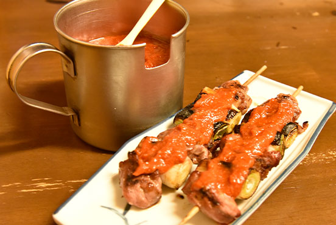

「うどん」を筆頭に、埼玉県民の知恵と伝統が詰め込まれた埼玉の郷土料理たち。その中には県全域で見かけられるものから、地方ごとの特色を色濃く反映した「ご当地」色の強い郷土料理までバリエーション豊富です。そんな埼玉を彩る郷土料理たちを厳選して紹介します。料理のしやすさ、旅行先での提供店舗の多さ、そして、分布地域の偏り具合を示す「ご当地度」も紹介していますので、よろしければご参考にしてください。
-
煮ぼうとう（ひもかわ）
料理しやすさ：★★★☆☆
旅先での見つけやすさ：★★★★☆
「ご当地」度：★★★★☆
主な地域：深谷市、秩父、県央付近
「ほうとう」は埼玉で比較的広く食べることができますが、中でも有名なのは「深谷煮ぼうとう」です。ほうとうの生めんを野菜と出汁と一緒に煮込み、最後の味付けに醤油を使う素朴な食べ方が埼玉の煮ぼうとうのスタンダードです。とくに、寒い時期に旬を迎える素材を使った煮ぼうとうは秋冬の絶品グルメです。
-
冷や汁うどん（すったて）
料理しやすさ：★★★☆☆
旅先での見つけやすさ：★★★☆☆
「ご当地」度：★★★★☆
主な地域：川島町、県央付近、県北
「冷や汁」は、地産の野菜や魚などの素材を使い出汁やみそ等で味付けをした冷たく食べるタイプの汁のことです。全国津々浦々、様々な「冷や汁」がありますが、うどんと食べるのが埼玉らしさといえます。汁にはすり胡麻が贅沢に使われ、暑い夏を乗り切る一品として、かけ汁・つけ汁両方の食べ方で昔から親しまれています。
-
武蔵野うどん
料理しやすさ：★★★☆☆
旅先での見つけやすさ：★★★★☆
「ご当地」度：★★★★☆
主な地域：県西
ざるに盛り付けたコシが強く太い角麺を、温かいスープに絡ませて食べるスタイルのうどんです。醤油がよくきいた鰹節ベースの少し強い味がスープの特徴です。スープにはキノコや豚肉などの具材が入ることが多く、素材のうまみもしっかりと感じられます。埼玉の他に多摩地方でも親しまれています。
-
かてめし
料理しやすさ：★★★☆☆
旅先での見つけやすさ：☆☆☆☆☆
「ご当地」度：★★☆☆☆
主な地域：秩父、県央、県南、県西
野菜等の具材を細く切って炒めたものを炊いた米に和えた郷土料理です。その昔、貴重品であった米は冠婚葬祭用のとっておきの食材として必要な量だけ、ごく少量蓄えられていたとのこと。「かてめし」はそんな米を使った祭日等のための行事食でした。現在は各家庭で作られる家庭色強めの料理として受け継がれています。
-
呉汁（ごじる）
料理しやすさ：★★☆☆☆
旅先での見つけやすさ：★☆☆☆☆
「ご当地」度：☆☆☆☆☆
主な地域：県内全域
すりつぶした大豆を贅沢に使ったみそ風味の汁です。具材には数種類の野菜や油揚げがお好みで使われます。今よりも更に農地が多かった埼玉では、昔から県内全域で人々に親しまれてきた古い郷土料理のひとつです。大豆は、栄養の少ない土地でも育ちやすく、収穫時期である秋は食卓にのぼる頻度が特に多かったようです。
-
すみつかれ
料理しやすさ：★☆☆☆☆
旅先での見つけやすさ：☆☆☆☆☆
「ご当地」度：★★★★☆
主な地域：県北
皮をむいた大豆と、「鬼おろし」という調理器ですりおろした大根やニンジンをベースに、細かく切った具材と酒粕さらに鮭の頭や身を加えて煮込んだ醤油味の料理です。伝統的に二月中旬の初午の日の祭事で赤飯とともに食されていました。節分で余った豆の有効活用にも一役買っていたと考えられます。
-
やきとり
料理しやすさ：☆☆☆☆☆
旅先での見つけやすさ：★★★★☆
「ご当地」度：★★★★★
主な地域：東松山市
東松山市といえば「やきとり」と言わしめるほどお酒好きには知られます。東松山市で「やきとり」というと、普通の「焼き鳥」屋では使われない豚の頭のコメカミから頬の部位を使用したものになります。提供はネギまスタイルが多く、ジューシーな味わいと柔らかい肉の独特な食感は高い評判を博しています。
-
小豆ぼうとう/ねじ
料理しやすさ：★★★★☆
旅先での見つけやすさ：★★☆☆☆
「ご当地」度：★★★★☆
主な地域：秩父、県央（比企郡）
小豆あんとほうとうを組み合わせた和菓子です。「小豆ぼうとう」というと、小豆あんをお汁粉のようにして食すスタイルを指し、「ねじ」というと、らせん状にねじった形状の麺を小豆あんと和えて食すスタイルを指すことが多いです。小麦の主力産地ならではの米をうまく小麦製品で代用する文化がここにも表れています。
-
ゆでまんじゅう（うでまんじゅう）
料理しやすさ：★★★★☆
旅先での見つけやすさ：☆☆☆☆☆
「ご当地」度：☆☆☆☆☆
主な地域：県内全域
こちらの甘味は各家庭でつくられてきた家庭色の強い郷土料理です。練った小麦を蒸すのではなく「茹でる」ことでもちもちの食感を実現しています。もち米を使った餅の食感とできるだけ近づけるための過去の埼玉県民なりの工夫なのかもしれません。伝統的には祭日などのハレの日に食べられる機会が多かったようです。
～～オマケの解説～～
隠れ「うどん県」と呼ばれるほどに、埼玉では県全体でうどんの郷土料理が豊富です。
…しかし、これは一体何故でしょうか？
…原材料である「小麦」の生産に大きく貢献した、埼玉出身の偉人の功績は決して無視できないでしょう。「麦翁(ばくおう)」という愛称でも親しまれる権田愛三。明治時代に農事改良家として活躍し、「二毛作」や「麦踏み」などの手法を農家に広め、当時の小麦の収穫量をなんと4～5倍に増やしたといわれています。彼は、これらの農業技法を全国的に布教するのにも尽力しました。これらの技術は、農業の技術が発展した現在も尚、活かされ続けています。
…うどん県埼玉の謎を紐解く鍵は、実はそんな「郷土料理の歴史」にも隠されていたんですね。